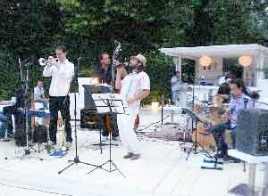
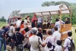
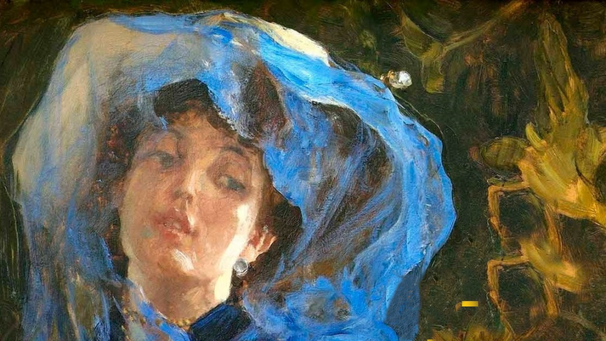
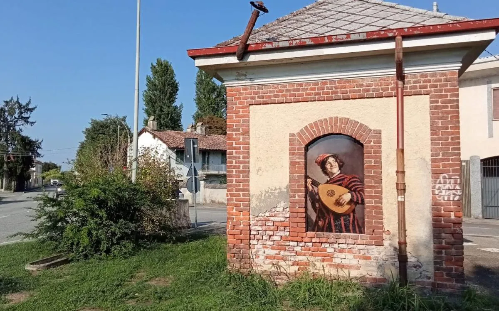

Festa dell'Arte — Gravellona Lomellina
Elenco delle edizioni con volantini, manifesti e foto di programma (2014–2026).
Le locandine 1995–2006 e 2017/2023 non sono reperibili online: restano i testi in archivio.
20ª ed. — 31/5 + 1–2/6/2014
Art'è su via Marconi; cartelli benvenuto; serate swing coi Milanoans
2014-20ed-locandina.jpg 2014-20ed-locandina-swing.jpg 
2014-20ed-vinaccia.jpg 2014-20ed-terranova.jpg 2014-20ed-arceri.jpg 
2014-20ed-trattore.jpg 2014-20ed-palcogalleggiante.jpg 2014-20ed-bambini-cavallo.jpg
21ª ed. — 6–7/6/2015 + Notte Anime
Ombrelli; Paradisum + Sugar Pie & The Candymen; Bubble Football
22ª ed. — 2016
Ombrelli; mostra Ko Thea Dallosta; 15° Concerto Ambientale
24ª ed. — 3/6/2018 + Notte delle Anime 2/6
Tema medievale; progetto Monforte della Palude
2018-24ed-locandina.jpg 2018-notte-anime-locandina.jpg
25ª ed. — 1–2/6/2019
Arte/musica/cucina/degustazioni
2019-25ed-programma.jpg
26ª ed. — 28–29/5/2022
Prima post-Covid; Notte Anime 11/6
2022-26ed-festa-arte.jpg 
2022-26ed-radiogold.png
28ª ed. — 1–2/6/2024
Tema: gatti
2024-28ed-gatti-manifesto1.jpg 2024-28ed-gatti-manifesto2.jpg
29ª ed. — 31/5–2/6/2025
Mousiké, l'arte delle Muse
2025-29ed-programma.jpg 2025-29ed-volantino.pdf 2025-29ed-volantino.pdf (PDF) 2025-29ed-inlombardia-programma.jpg 2025-29ed-manifesto-mousike1.jpg 2025-29ed-manifesto-mousike2.jpg 2025-29ed-manifesto-mousike3.png
30ª ed. speciale — 19–20/9/2026
Museo Bicicletta Geddo; MARPHILL; Caccia all'Arte
2026-30ed-manifesto.jpg 
2026-30ed-informatore.webp
Raccolta documentaristica a cura del progetto di storia locale di Gravellona Lomellina.
I manifesti restano dei rispettivi autori e organizzatori (Comune, GravellonArtistica, Ca di Ratt):
uso di studio, verificare i diritti prima di ogni riuso.